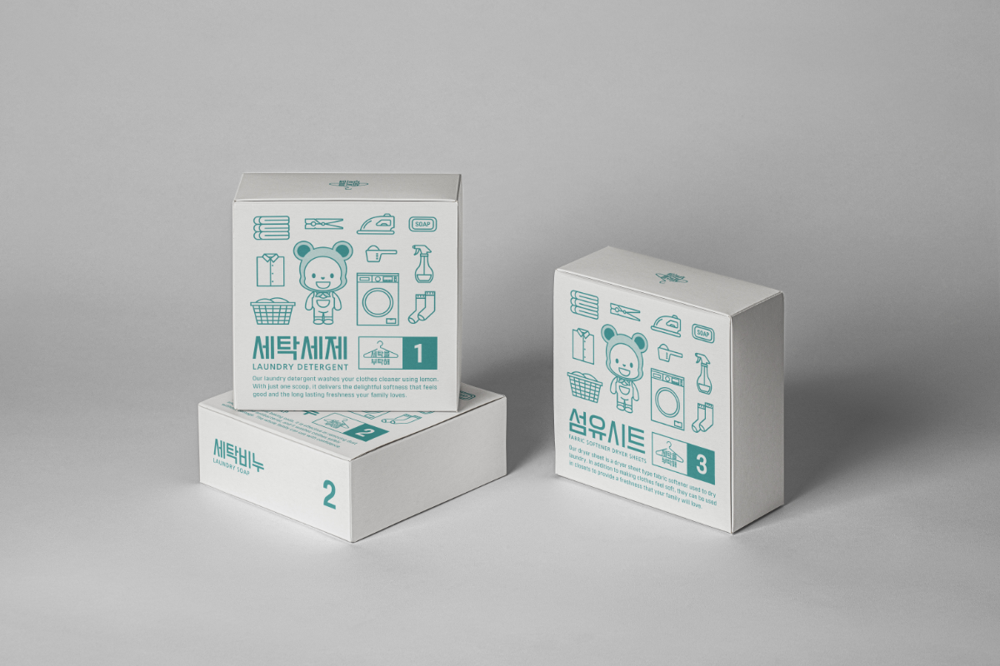

Package Design
패키지 디자인
Korean Lunch box Package
‘탈’은 재앙을 물리치고 풍요를 기원하거나 놀이의 수단으로 사용되었습니다. 하회탈 종류인 각시탈과 놀이에 사용된 말뚝이탈을 디자인 요소로 사용해 전통의 느낌을 살리고 도시락 운반, 포장용으로 사용이 가능하면서 하나의 기념품으로 남길 바라는 마음을 전달하고자 다기주머니를 제작하였습니다.

Korean Rice Cake Package ‘Hantol’
최근 건강을 생각하는 소비자들이 늘어나면서 건강한 식사 대용식
또는 간식이 큰 인기를 끌며 바쁜 삶을 살아가는 현대인들을 위한
아침 대용식으로 한국인들의 입맛을 사로 잡을 수 있는 영양떡을
에너지바와 같는 휴대하기 간편해 언제 어디서나 가볍게 즐길 수
있도록 상품화 하였다.
Eco-friendly laundry set
우리가 실생활에서 흔하게 사용되는 액체 세제의 경우 대부분 두껍
고 커다란 플라스틱 용기 안에 담겨 판매되고 있습니다. 또한 이러
한 합성세제 속에는 미생물 분해가 되지 않는 미세 플라스틱이 들
어있어 생태계 오염의 주범으로 지목되고 있습니다. 플라스틱 폐기
물을 배출하지 않는 친환경 세탁세제를 상품화 해보고자 했습니다.

